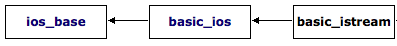

class template <istream> <iostream>
std::basic_istream
template <class charT, class traits = char_traits<charT> >
class basic_istream;
Input stream
|
|
field |
member functions |
description |
|
Formatting |
format flags |
A set of internal flags that affect how certain input/output operations are interpreted or generated. See member type fmtflags. |
|
|
field width |
Width of the next formatted element to insert. |
||
|
display precision |
Decimal precision for the next floating-point value inserted. |
||
|
fill character |
Character to pad a formatted field up to the field width (width). |
||
|
|
|||
|
State |
error state |
The current error state of the stream. Individual values may be obtained by calling good, eof, fail and bad. See member type iostate. |
|
Template parameters
charT
Character type.
This shall be a non-array POD type.
Aliased as member type basic_istream::char_type.
traits
Character traits class that defines essential properties of the characters used by stream objects (see char_traits).
traits::char_type shall be the same as charT.
Aliased as member type basic_istream::traits_type.
Template instantiations
Input stream (class )
Input stream (wide) (class )
These instantiations are declared in <istream>, which is included by reference in <iostream>.
Member types
The class contains these member types inherited from ios_base through basic_ios:
Type for stream state flags (public member type )
Type for stream opening mode flags (public member type )
Public member functions
Construct object (public member function )
Destroy object (public member function )
Formatted input:
Extract formatted input (public member function )
Unformatted input:
Get character count (public member function )
Get characters (public member function )
Get line (public member function )
Extract and discard characters (public member function )
Peek next character (public member function )
Read block of data (public member function )
Read data available in buffer (public member function )
Put character back (public member function )
Unget character (public member function )
Public member functions inherited from basic_ios
Check whether state of stream is good (public member function )
Check whether eofbit is set (public member function )
Check whether failbit or badbit is set (public member function )
Check whether badbit is set (public member function )
Evaluate stream (not) (public member function )
Evaluate stream (public member function )
Public member functions inherited from ios_base
Get/set format flags (public member function )
Set specific format flags (public member function )
Clear specific format flags (public member function )
Get/Set floating-point decimal precision (public member function )
Get/set field width (public member function )
Toggle synchronization with cstdio streams [static] (public static member function )